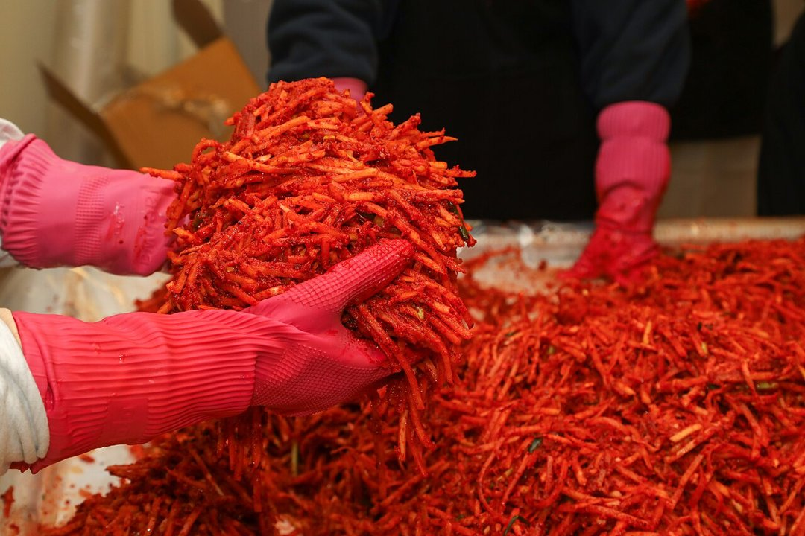

본문
📷 사진 1 자리

▲ 배추에 양념을 버무리는 김장 · 사진: Anattadairy / CC0 / 위키미디어 공용
올해 4인 가족이 전통시장에서 재료를 사 김장을 하면 약 34만 원이 든다는 조사가 나왔어요. 같은 양을 완제품 김치로 사면 77만 원이 넘어요. 그런데 올해는 처음으로 김치를 사 먹는 집이 열 집에 네 집을 넘었어요. 배추는 싸졌는데 왜 새우젓만 비쌀까요? 할인은 어디서 받을까요?
3줄 요약
- 직접 담그면 33만 9,670원, 절임배추를 쓰면 38만 4,730원, 완제품은 77만 2,620원이에요(한국물가협회, 4인 가족).
- 배추·무는 풍작으로 싸졌지만 새우젓은 1년 새 30% 넘게 올랐어요. 젓새우가 덜 잡혔기 때문이에요.
- 상품 김치를 사는 집이 41.4%로 처음 40%를 넘었어요. 정부는 마트 최대 40%, 수산물 최대 50% 할인을 지원해요.
올해 김장 비용, 기관마다 다른 이유
한국물가협회가 11월 10~12일 전국 6대 도시에서 15개 품목을 조사했어요. 포기김치에 깍두기·총각김치까지 4인 가족 몫이 기준이에요. 전통시장에서 직접 담그면 33만 9,670원으로 지난해보다 7.6% 내렸어요.
다른 기관 숫자는 이보다 낮아요. 조사 품목 수와 할인 반영 여부가 달라서예요.
| 조사 기관 | 4인 가족 비용 | 기준 |
|---|---|---|
| 한국농수산식품유통공사(aT) | 19만 9,456원 | 13개 품목, 할인 반영(11/10) |
| 한국물가정보 | 28만 8,500원 | 11개 품목, 전통시장 |
| 한국물가협회 | 33만 9,670원 | 15개 품목, 전통시장 |
정부·마트 할인 행사 매장에서 산다면 aT 숫자에, 할인 없이 시장에서 산다면 물가협회 숫자에 가까워요.
직접·절임배추·완제품 비교
| 방법 | 4인 가족 | 배추 1포기당 |
|---|---|---|
| 직접 담그기 | 33만 9,670원 | 2만 1,230원 |
| 절임배추 이용 | 38만 4,730원 | 2만 4,050원 |
| 완제품 구매 | 77만 2,620원 | 4만 8,290원 |
직접 담그는 쪽은 재료값만 따졌고 품값은 넣지 않았어요. 포기당으로 보면 절임배추는 직접 절이는 것보다 2,820원 더 들고 완제품보다는 2만 4천 원 넘게 싸요.
📷 사진 2 자리

▲ 김장 양념 버무리기 · 사진: U.S. Army photo by Pfc. Bryson Walker / Public domain / 위키미디어 공용
우리 집 김장비 계산해 보기
위 포기당 비용은 양념까지 나눠 담은 값이라, 우리 집 포기 수만 곱하면 대략의 예산이 나와요. 예를 들어 배추 10포기를 한다면 이래요.
- 직접 절여 담그기: 2만 1,230원 × 10 = 약 21만 2천 원
- 절임배추로 담그기: 2만 4,050원 × 10 = 약 24만 원
- 완제품으로 사기: 4만 8,290원 × 10 = 약 48만 3천 원
정부 할인 행사를 쓰면 재료비는 여기서 더 내려가요.
배추는 싸졌는데 새우젓은 왜
한국농촌경제연구원은 가을배추와 무 생산이 늘어 올해 전체 김장 비용이 지난해보다 4% 안팎 줄 것으로 봤어요. 반대로 새우젓 1kg 값은 10월 기준 2만 269원으로 1년 새 32.5% 올랐어요.
원인은 공급이에요. 해양수산부 수산정보포털 자료를 인용한 뉴스1 보도에 따르면 인천 지역 젓새우 어획량은 10월 말까지 1,228톤으로 지난해보다 55.3% 줄었어요. 새우젓은 몇 달 숙성해 팔기 때문에 여름 이후 덜 잡힌 영향이 김장철 값에 그대로 실려요. 뉴데일리는 올해 1월부터 젓갈류가 부가세 과세 대상으로 바뀐 점도 가격에 반영됐다고 전했어요.
사 먹는 집이 더 많아졌어요
한국농촌경제연구원이 10월 전국 1,000가구를 조사했어요. 김치를 상품으로 사겠다는 집은 41.4%로 지난해 35.9%에서 늘었고 처음으로 40%를 넘었어요. 직접 담그거나 가족·지인에게 받는 집은 58.6%예요.
| 농경연 김장 의향 조사 | 비율 |
|---|---|
| 상품 김치 구매 | 41.4% |
| 직접 담금·지인 조달 | 58.6% |
| 김장 줄이는 이유: 김치 소비 감소 | 42.9% |
| 상품 김치 중 온라인 구매 | 60% |
눈여겨볼 건 이유예요. 김장을 줄이는 가장 큰 이유는 '집에서 먹는 김치가 줄어서'였고 비용 부담보다 앞섰어요. 김장을 하는 집은 11월 중순~12월 상순에 담그겠다는 비율이 69.3%로 가장 높았어요. 지역별로는 서울·경기·강원·충청이 11월 중순, 영남이 11월 하순, 호남·제주가 12월 상순에 많이 담가요.
직접 담그는 집은 가족 입맛과 재료에 대한 믿음을 이유로 꼽았어요. 사 먹는 집은 편하고 김장의 번거로움을 덜 수 있어서라고 답했어요. 같은 김치라도 무엇을 아끼고 싶은지에 따라 선택이 갈리는 셈이에요.
할인은 이렇게 받아요
정부는 11월 3일 김장재료 수급안정 대책을 내놓고 역대 최대인 640억 원을 할인에 쓰기로 했어요(관계부처 합동, 보도 종합).
- 배추·무·고춧가루 등: 대형마트·중소형마트에서 최대 40% 할인
- 새우젓·멸치액젓·천일염·굴: '대한민국 수산대전 김장 특별전'에서 최대 50% 할인
- 전통시장: 농할상품권 20% 할인 판매
- 기간은 12월 초까지예요. 매장별 종료일은 수산대전 누리집과 마트 공지에서 확인하세요.
같은 대책에는 날씨가 나빠질 때를 대비한 비축 물량도 들어 있어요. 배추 4만 6,500톤과 무 9,000톤을 확보해 두고 값이 뛰면 풀어요. 수입 김치와 양념 채소의 원산지 표시 단속, 배추·무·고추·마늘 잔류농약 검사도 함께 하기로 했어요.
자주 묻는 질문
Q. 절임배추와 직접 절이기, 뭐가 나아요?
비용은 포기당 2,820원 차이예요. 절이고 씻는 품을 생각하면 일손이 적은 집은 절임배추가 무난해요.
Q. 김장 비용이 기사마다 다른데 뭘 믿어야 하나요?
조사 품목과 할인 반영이 달라요. 사는 곳에 맞춰 aT(할인 반영) 또는 물가협회(전통시장) 숫자를 보세요.
Q. 새우젓은 언제 사는 게 좋나요?
정부 할인 행사(수산대전) 기간 안에 사는 게 확실한 방법이에요. 공급이 줄어 김장철 전에 크게 내릴 요인은 적다는 전망이 나와 있어요.
조사에서 김장을 줄이는 이유가 '먹는 양이 줄어서'라는 건, 비용을 아끼는 가장 큰 방법이 재료를 싸게 사는 것보다 양을 맞추는 데 있다는 뜻이에요. 지난해 김치가 남았다면 포기 수를 줄이고 부족한 만큼만 상품 김치로 채우는 조합이 계산상 가장 덜 버려요.
할인 행사는 12월 초까지예요. 김장 날짜를 정했다면 그 전 주말에 마트 할인 품목부터 확인해 두세요.
함께 보면 좋은 이슈
- 김장 배추값 내렸는데 농민은 울상, 도매가와 장바구니 가격의 차이
- 재건축 부담금 계산 방법, 반포현대 2억 원대 청구 기한은 12월 30일